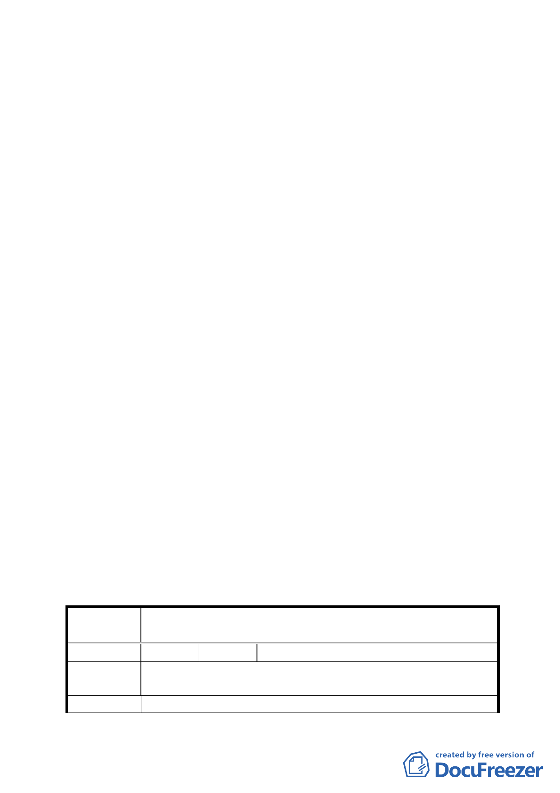

案經市府相關單位於 88 年 3 月 6 日研商後獲致共識，同意
依都設委員會專案會議之建議辦理，有關該案市府所減少
興建之獎勵樓地板面積（計 1881.85 平方公尺）則暫予保
留，俟容積移轉相關法令通過後，再行辦理移轉。至於移
入基地，經評估後以捷運板南線南港機廠較為適宜。
（二）惟「都市計畫容積移轉實施辦法」於 88 年 4 月 6 日發布，
前開捷運辛亥站聯開大樓配合都設委員會建議未予興建之
樓地板面積，並不符合容積移轉實施辦法中有關送出基地
之規定。市府爰擬透過「都市計畫容積調配」方式，修訂
南港機廠交 33、33-1、33-2 交通用地之土地使用分區管制
內容，規定該等交通用地之容積率，除原計畫所規定之 160
％上限外，得再增加前開捷運辛亥站聯開大樓未予興建之
樓地板面積（計 1881.85 平方公尺）（以等面積方式調配）。
七、公民或團體所提意見：6 件，詳如綜理表。
決議：
一、 本案除計畫書第 11 頁表格「修訂計畫內容」一項，有關得再
增加捷運系統木柵線辛亥站聯合開發之獎勵容積，其數字應修
正為「1881.85」平方公尺，以及第 12 頁示意圖之案名、圖例
等應依本計畫再作修正外，其餘依所送計畫書內容通過。
二、 公民或團體所提意見決議情形如后附表。
臺北市都市計畫委員會 公民或團體所提意見綜理表
案名
編號
陳情理由
建議辦法
修訂捷運系統南港線南港機廠交 33、33-1、33-2 交通用地土
地使用分區管制案
１ 陳情人 闕德國
原容積 160％，現因辛亥站開發問題，改為 162.3％，對原地
主可有補償？
都發局、都委會日後會議請通知原地主參與會議討論。
7